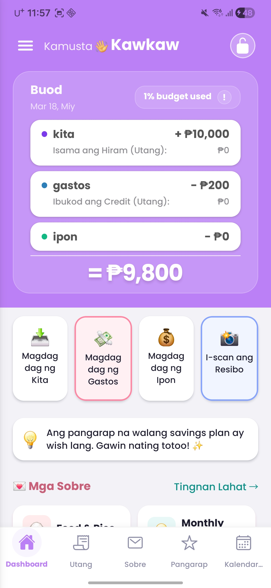
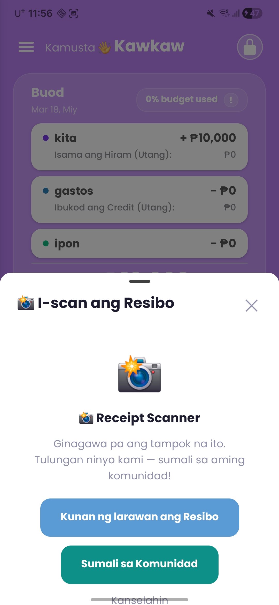
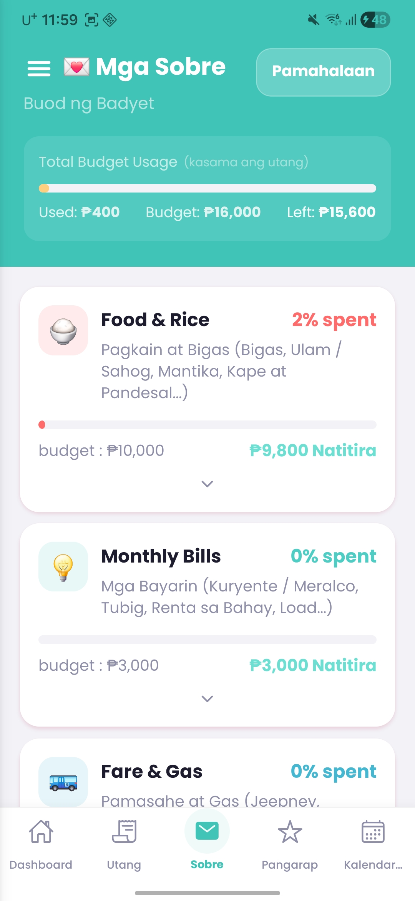
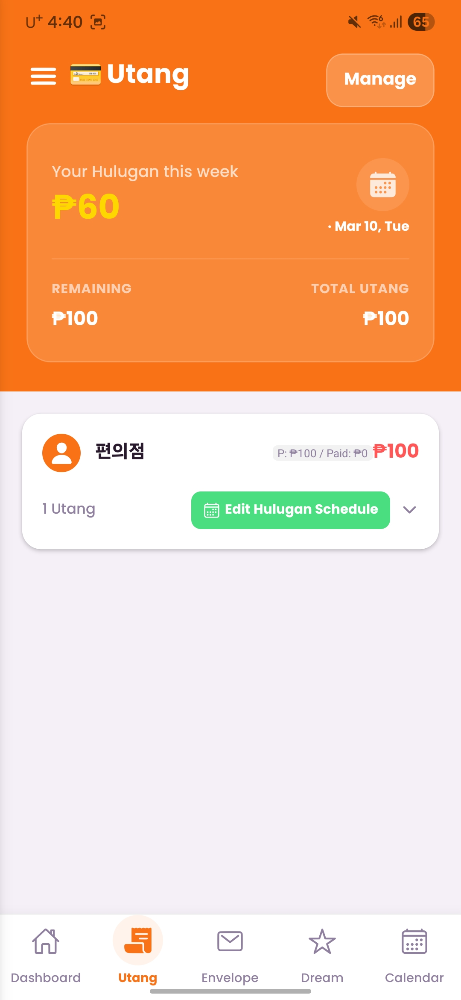
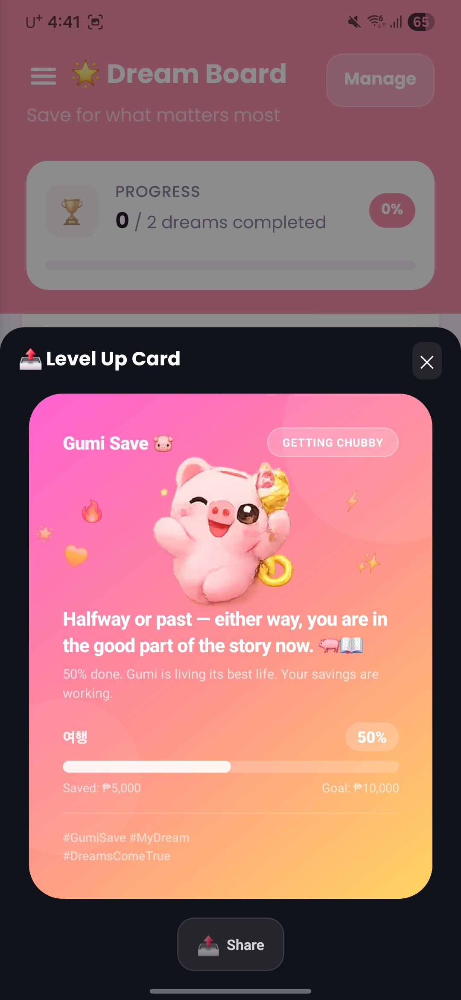
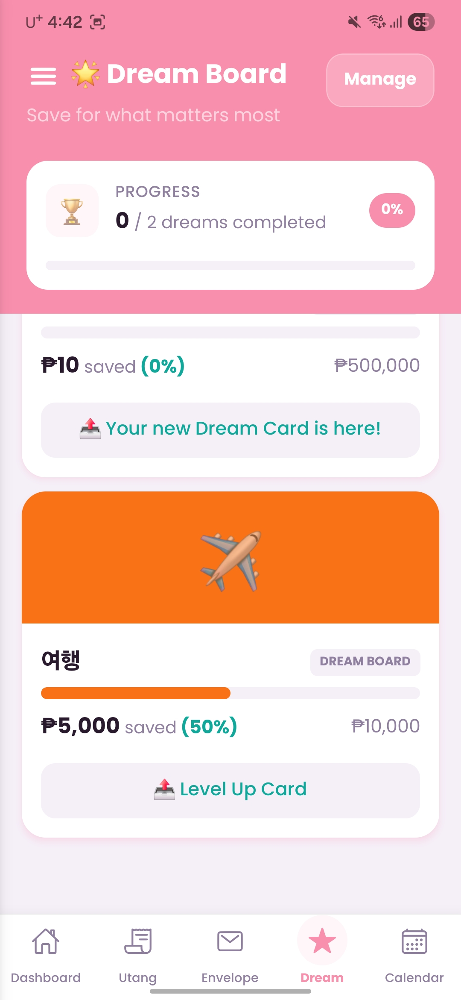
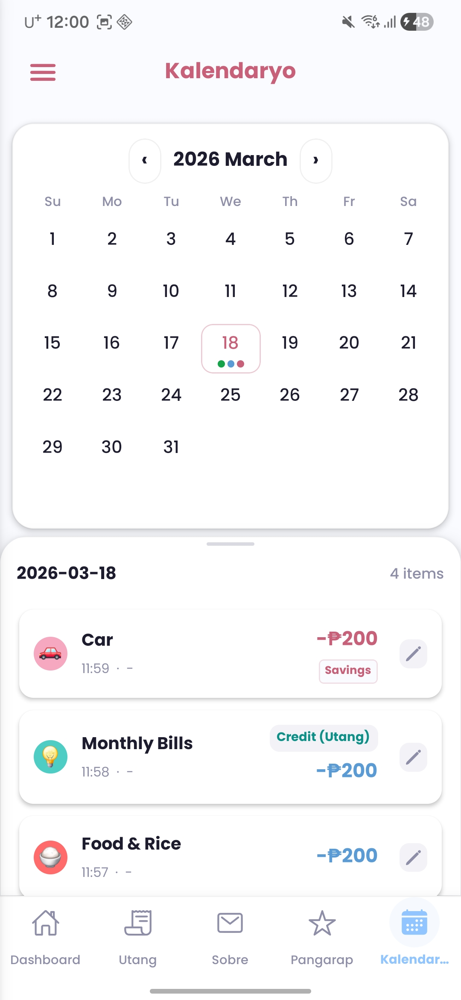
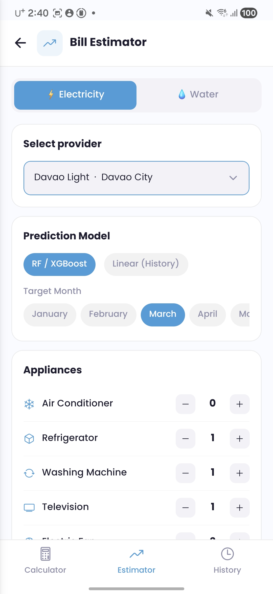
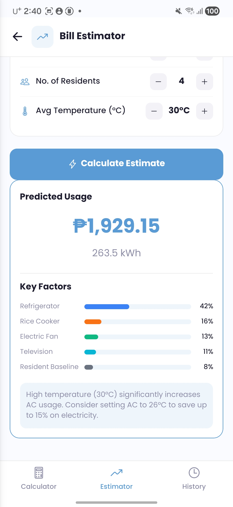
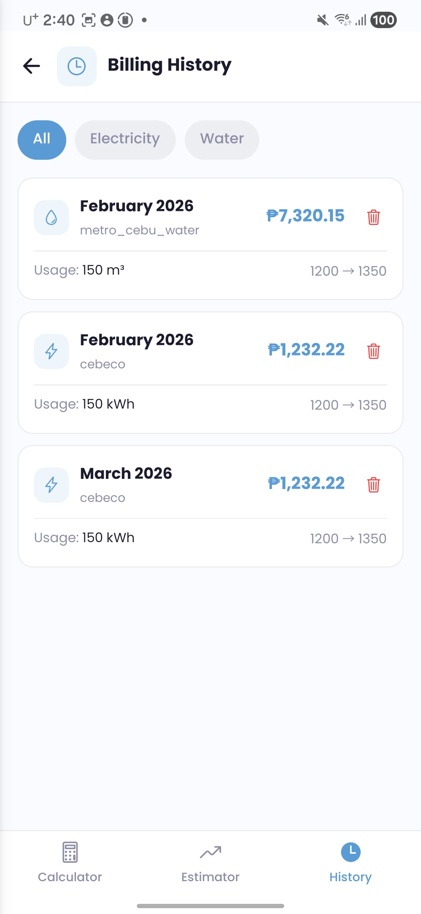

Gumi Save is the personal finance app built for Filipinos — offline-first, no sign-up required, and packed with tools for OFW families. Ang Gumi Save ay personal finance app para sa mga Pilipino — gumagana nang walang internet, walang pag-sign up, at may mga tampok para sa OFW families. Ang Gumi Save usa ka personal finance app alang sa mga Pilipino — nagtrabaho bisan walay internet, walay sign-up, ug puno sa features para sa OFW families.
Set up in under a minute with just a name and a PIN. No email, no phone number, no social login required. Mag-set up sa loob ng isang minuto gamit lang ang pangalan at PIN. Walang email, numero ng telepono, o social login na kailangan. Mag-setup sulod sa usa ka minuto gamit lang ang ngalan ug PIN. Walay email, numero sa telepono, o social login nga gikinahanglan.
Display name only — real name or nickname is fine (2+ characters). Display name lang — totoong pangalan o palayaw (2+ karakter). Display name lang — tinuod nga ngalan o alias (2+ karakter).
Your numeric lock code. Forgotten PINs can be recovered using your monthly budget totals. Ang iyong numeric lock code. Ang nakalimutang PIN ay maaaring ma-recover gamit ang iyong monthly budget totals. Ang imong numeric lock code. Ang nalimtang PIN mapabawi gamit ang imong monthly budget totals.
English · Tagalog · Bisaya (Cebuano) — changeable any time in Settings. English · Tagalog · Bisaya (Cebuano) — mababago anumang oras sa Settings. English · Tagalog · Bisaya (Cebuano) — mausab bisan kanus-a sa Settings.


The home screen shows your monthly summary card, pinned envelopes, today's transactions, and quick-action buttons. Ang home screen ay nagpapakita ng iyong monthly summary card, pinned envelopes, transaksyon ngayon, at mga quick-action button. Ang home screen nagpakita sa imong monthly summary card, pinned envelopes, transaksyon karon, ug mga quick-action button.
Record money spentI-record ang nagastosI-record ang ginagastos
Record money receivedI-record ang natanggapI-record ang nadawat
Allocate to a Dream goalIlaan sa isang Dream goalIlaan sa usa ka Dream goal
AI auto-fills your expenseAI ang awtomatikong magsulatAI ang awtomatik mag-fill
Point your camera at any receipt and AI reads the amount, item name, and suggests the right envelope automatically. Itutok ang camera sa anumang resibo at awtomatikong mababasa ng AI ang halaga, pangalan ng item, at iminumungkahi ang tamang sobre. Itutok ang camera sa bisan unsang resibo ug awtomatikong mabasa sa AI ang kantidad, ngalan sa item, ug suguhon ang sakto nga sobre.
Clearer photos = better accuracyMas malinaw = mas tumpakMas klaro = mas tumpak
Amount · Memo · Suggested EnvelopeHalaga · Memo · Minungkahing SobreKantidad · Memo · Gi-suggest nga Sobre
Edit anything if needed, then tap Save.I-edit kung kailangan, pagkatapos i-tap ang Save.I-edit kung gikinahanglan, dayon i-tap ang Save.
Always verify before saving. Requires internet. Blurry or glare-affected photos may reduce accuracy.Laging suriin bago i-save. Nangangailangan ng internet. Ang malabo o may reflection na litrato ay maaaring magbawas ng katumpakan.Lagi pangitaa sa wala pa ma-save. Kinahanglan og internet. Ang malayo o may reflection nga litrato makapababa sa katumpakan.
Split your monthly budget into named categories — Food, Transport, Bills — and track spending per envelope in real time. Hatiin ang iyong buwanang badyet sa mga kategorya — Pagkain, Transportasyon, Bayarin — at subaybayan ang gastos bawat sobre nang real time. Bahinon ang imong buwanang badyet sa mga kategorya — Pagkaon, Transportasyon, Bayad — ug susiha ang ginagastos matag sobre sa real time.
See how much of each envelope is spentMakita kung magkano ang nagastos sa bawat sobreMakita kung pila ang nagastos sa matag sobre
Up to 4 envelopes pinned for quick accessHanggang 4 sobre ang maaaring i-pinHangtod 4 ka sobre ang ma-pin
See Utang totals per envelopeMakita ang kabuuang Utang bawat sobreMakita ang total Utang matag sobre
Personalize every envelopeIpersonalisa ang bawat sobreI-personalize ang matag sobre


Track borrowed money and installments with flexible payment schedules and built-in reminders. Subaybayan ang hiniram na pera at mga installment na may flexible na payment schedule at built-in na mga paalala. Susiha ang gihiram nga kwarta ug mga installment nga adunay flexible nga payment schedule ug built-in nga mga pahinumdom.
Flexible payment schedulesFlexible na payment schedulesFlexible nga payment schedules
Set custom dates and amountsMagtakda ng custom na petsa at halagaIbutang ang custom nga petsa ug kantidad
Get notified 0–3 days before dueMakatanggap ng abiso 0–3 araw bago mag-dueMakadawat og abiso 0–3 adlaw sa wala pa mag-due
Track progress toward full paymentSubaybayan ang progreso hanggang sa ganap na mabayaranSusiha ang progreso hangtod sa bug-os mabayaran
Each savings goal gets an animated Dream Card — your mascot evolves as your progress climbs through 5 stages. Ang bawat savings goal ay may animated Dream Card — ang iyong mascot ay nagbabago habang lumalaki ang iyong progreso sa 5 antas. Ang matag savings goal adunay animated Dream Card — ang imong mascot nag-ilis samtang nagdako ang imong progreso sa 5 lebel.
You're just getting startedNagsisimula ka pa langNagsugod ka pa lang
Taking your first stepsGinagawa na ang unang hakbangGihimo na ang unang lakang
Things are filling up nicelyPumupuno na nang maayosNagpuno na og maayo
You're so close!Malapit ka na!Hapit na ka!
You did it! 🎉 Confetti time!Nagawa mo! 🎉 Oras na ng confetti!Nahimo nimo! 🎉 Oras na sa confetti!



Browse all your transactions on a monthly calendar. Dots mark active days. Tap any date to see and edit its records. Tingnan ang lahat ng iyong transaksyon sa monthly calendar. Ang mga tuldok ay nagmamarka ng mga araw na may aktibidad. I-tap ang anumang petsa para makita at i-edit ang mga rekord nito. Tan-awa ang tanan nimong transaksyon sa monthly calendar. Ang mga tuldok nag-marka sa mga adlaw nga may aktibidad. I-tap ang bisan unsang petsa para makita ug i-edit ang mga rekord niini.
See which days have transactions at a glanceMakita sa isang tingin kung aling araw may transaksyonMakita sa usa ka sulyap kung unsang adlaw adunay transaksyon
Modify or delete any past transactionBaguhin o burahin ang anumang nakaraang transaksyonUsba o tangtanga ang bisan unsang nakaaging transaksyon
Calculate electricity and water bills from meter readings, then predict next month's cost using AI — based on your appliances and household size. Kalkulahin ang bayarin sa kuryente at tubig mula sa meter readings, pagkatapos hulaan ang gastos ng susunod na buwan gamit ang AI — batay sa iyong mga gamit sa bahay at bilang ng miyembro ng pamilya. Kalkulahon ang bayad sa kuryente ug tubig gikan sa mga meter reading, unya tagna ang gastos sa sunod nga buwan gamit ang AI — base sa imong mga gamit sa balay ug gidaghanon sa pamilya.
Enter previous & current meter readings, choose provider (MERALCO, CEBECO, etc.)Ilagay ang nakaraang at kasalukuyang meter readings, pumili ng providerIbutang ang nakaaging ug karon nga meter readings, pili sa provider
Input appliances, residents, and temperature → get predicted amount + key factorsIlagay ang mga gamit sa bahay, bilang ng tao, at temperatura → makuha ang hulang halaga + mga pangunahing salikIbutang ang mga gamit sa balay, gidaghanon sa tawo, ug temperatura → makuha ang tagna nga kantidad + mga key factors
Browse past electricity and water billing recordsTingnan ang mga nakaraang rekord ng kuryente at tubigTan-awa ang nakaaging mga rekord sa kuryente ug tubig



A one-time 6-digit OTP transfers your entire backup securely — no email or password needed. Ang isang 6-digit na OTP ay ligtas na naglilipat ng iyong buong backup — walang email o password na kailangan. Ang usa ka 6-digit nga OTP luwas nga nag-transfer sa imong tibuok backup — walay email o password nga gikinahanglan.
Settings → Safe & Secure → Backup
Tap [Backup] — app compresses & uploads all your dataI-tap ang [Backup] — pine-pack at ina-upload ang lahat ng dataI-tap ang [Backup] — gi-compress ug gi-upload ang tanan nga data
Tap [Get OTP] to receive your 6-digit codeI-tap ang [Get OTP] para makuha ang iyong 6-digit na codeI-tap ang [Get OTP] para makuha ang imong 6-digit code
Enter the code on your new device within 3 minutesIlagay ang code sa iyong bagong device sa loob ng 3 minutoIbutang ang code sa imong bag-ong device sulod sa 3 minuto
Settings → Safe & Secure → Restore
Tap [Restore] on your new deviceI-tap ang [Restore] sa iyong bagong deviceI-tap ang [Restore] sa imong bag-ong device
Enter the 6-digit OTP from your old deviceIlagay ang 6-digit na OTP mula sa iyong lumang deviceIbutang ang 6-digit nga OTP gikan sa imong daan nga device
Confirm the prompt → restoration begins automaticallyKumpirmahin ang prompt → awtomatikong magsisimula ang restoreI-confirm ang prompt → awtomatik magsugod ang restore
All data restored to your new device!Lahat ng data naibalik sa iyong bagong device!Tanan nga data naibalik sa imong bag-ong device!
1 million possible combinations, randomly generated1 milyong posibleng kombinasyon, random na ginawa1 milyon nga posibleng kombinasyon, random nga gibuhat
OTP becomes invalid after 3 minutesHindi na balido ang OTP pagkatapos ng 3 minutoDili na valid ang OTP human sa 3 minuto
Download link auto-expires after 60 secondsAng download link ay awtomatikong mag-expire pagkatapos ng 60 segundoAng download link awtomatik mag-expire human sa 60 segundo
Auth uses anonymous ID — no email or phoneGumagamit ng anonymous ID — walang email o teleponoNaggamit og anonymous ID — walay email o telepono
Lightweight & secure file transferMagaan at ligtas na paglipat ng fileMagaan ug luwas nga paglipat sa file